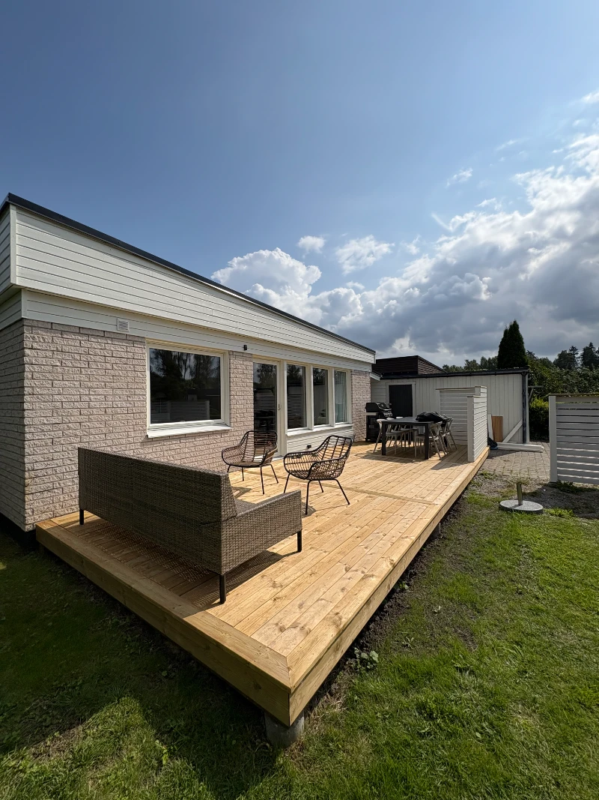
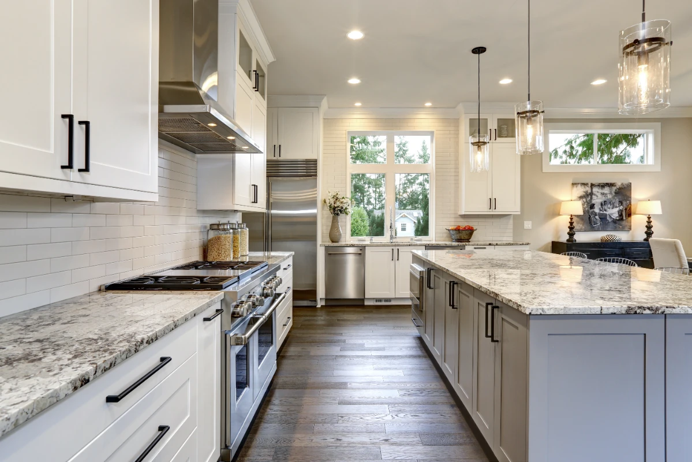
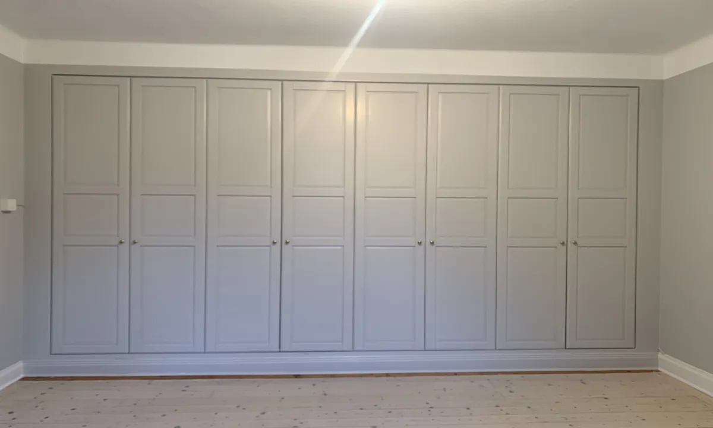

Vi lyssnar.
Vi går igenom dina idéer, behov och projektets förutsättningar.

UPPSALA · ENKÖPING · STOCKHOLM
Från första idén till sista listen.
Renovering, snickeri och nybyggnation med C27 Bygg.
ETT BYGGFÖRETAG MED YRKESSTOLTHET
Vi är C27 Bygg AB. Under ledning av Carl Aronsson förenar vi gediget hantverk med moderna metoder. Nära kontakt, tydlig planering och omsorg om detaljerna följer med hela vägen.
Lär känna C27Tio tjänster. Samma omsorg om helheten.

Snickeri för små förbättringar och stora förändringar. Vi arbetar med nybyggnation, renovering och anpassade lösningar med fokus på passform, funktion och ett noggrant utförande. Uppdraget anpassas efter ditt hem och dina behov.
Utforska snickeriReferensprojekt från C27. Se materialmötena, passformen och detaljerna på nära håll.
Sammanhängande förvaring med spegeldörrar och detaljer mot taket.
TV-vägg med stående träribbor och integrerad förvaring.
Garderobsvägg med ramdörrar och en enhetlig färgsättning.
Måttanpassad förvaring med en öppen nisch.
Inredningssnickeri under snedtak.
Förvaring som följer sovrummets väggar och tak.
Träinredning och en integrerad TV-nisch vid sängen.
Bastu med träpanel och belysning vid sittbänkarna.
Ljusa ytor och trä i ett rum med sluttande tak.
Du ska veta vad som händer, vem du pratar med och vad nästa steg är.
Vi går igenom dina idéer, behov och projektets förutsättningar.
Omfattning, material, offert och tidsplan ger bygget en tydlig grund.
Vi samordnar arbetet och håller kontakten genom löpande avstämningar.
Vi går igenom resultatet, avslutar med kontroll och ser till att du vet vad som gäller framåt.
Vi tycker att ett bra byggprojekt märks lika mycket i kontakten som i slutresultatet.
Med Carl Aronsson i spetsen kombinerar C27 Bygg traditionellt hantverk med moderna arbetssätt. Vi hjälper privatpersoner och företag med små förbättringar, omfattande renoveringar och nybyggnation.
Som totalentreprenör kan vi hålla ihop projektet från planering till färdigställande. Vår ambition är enkel: genomtänkta lösningar, lång livslängd och en kund som känner sig delaktig.
Vi arbetar i Uppsala, Enköping och hela Stockholmsområdet.
Råd och inspiration inför renoveringen.

Storlek, material, planlösning och installationer avgör helheten.
Läs artikeln
Skilj på kosmetiskt slitage och tecken som behöver undersökas.
Läs artikelnErfarenhet, planering, kostnader och garantier bör vara tydliga från början.
Läs artikelnBerätta vad du vill göra, var projektet finns och när du vill komma igång. Vi diskuterar förutsättningarna och tar fram underlag för en kostnadsfri offert.
Ja. Som totalentreprenör kan vi hålla ihop planering, hantverk och de olika arbetsmomenten fram till färdigställandet.
Vi går igenom omfattning, material och tidsram innan start. Löpande dialog hjälper oss att hantera frågor och förändringar under arbetet.
Vi strävar efter långlivade material, återvinningsbara alternativ och energieffektiva lösningar där de passar uppdraget.
Ja. Garantins omfattning och villkor framgår av avtalet för det aktuella arbetet.
Berätta om din idé. Vi hjälper dig med nästa steg.
073-522 32 74Carl Aronsson · C27 Bygg AB
calle@c27byggab.se
Fyll i uppgifterna för att förbereda ett mejl till Carl. Du skickar det sedan i ditt e-postprogram.